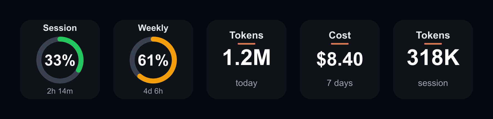
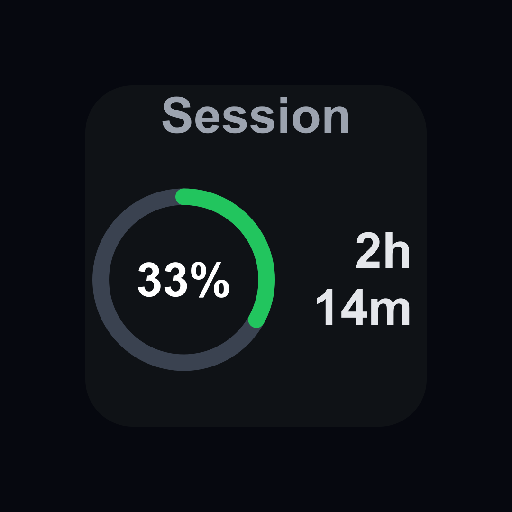
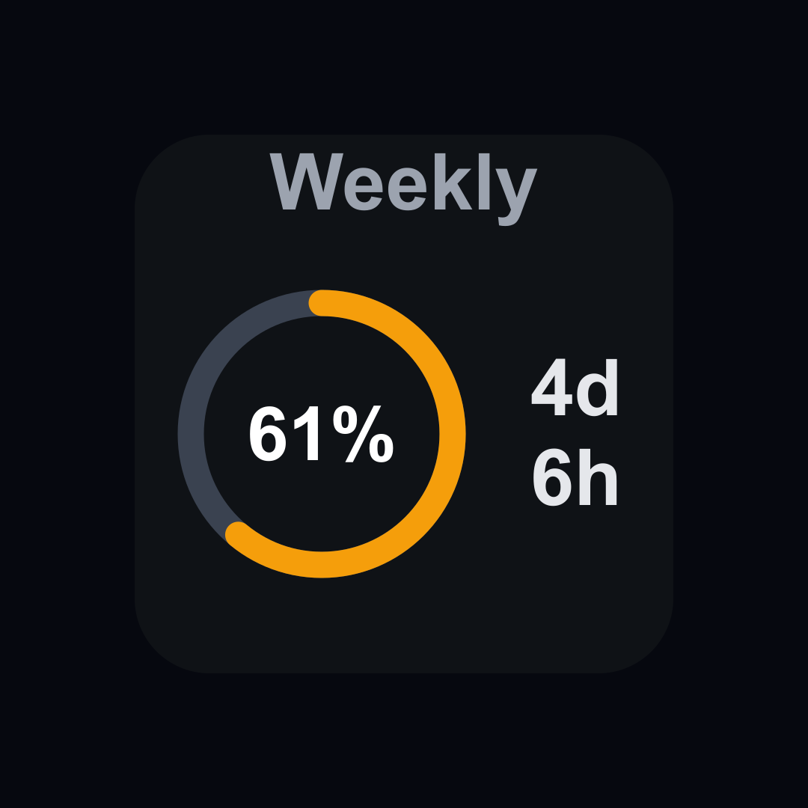

Stream Deck plugin · Windows & macOS
Your AI coding usage.
On a key.
Live session and weekly limits, tokens, and cost — rendered straight onto your Stream Deck. One action, as many keys as you like. Tap to refresh.

Free · open source · MIT licensed
Limits
The whole budget, at a glance.
Session (5h) and weekly (7d) utilization as color-coded ring gauges — green, amber, red — each with a live reset countdown. Pro and Max plans both supported.




Tokens & cost
Counted from your own logs.
Token totals and equivalent spend, parsed locally from Claude Code's transcripts. Pick today, the last 7 days, or your current session — per key.


Privacy
Private by design.
Runs on your machine
No servers, no analytics, no telemetry. The plugin reads data that already exists locally and draws it on your keys.
One request, to Anthropic
Your own token is sent only to Anthropic's usage endpoint — the
same one Claude Code's /usage uses. Nothing is
routed through anyone else.
Stores nothing
The credential token is never copied or cached, and transcript contents are read, totaled, and discarded.
Read the full privacy policy.
Get started
Three steps to a live key.
Install
Add the plugin to the Stream Deck app, then drag the Usage Meter action onto any key.
Pick a metric
Choose Session, Weekly, Opus, Sonnet, Tokens, or Cost in the key's settings. Repeat on more keys for the rest.
Watch it update
Keys refresh every 60 seconds, and a tap forces an immediate refresh. All keys share one cached request.
Requires the Stream Deck app 6.9+ on Windows 10+ or macOS 12+, and that you've signed in to Claude Code once on this machine. The Node runtime ships with Stream Deck — nothing else to install.